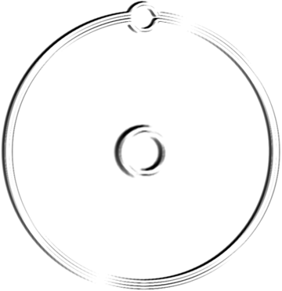

__home __new __what __who __what.was __what.will.be __21/22 corp __(23) __ele_ment __think __orbits
|
L I N K S
|
||
 |
outer orbits:: essential ele_affiliated sites
parallel orbits:: like-minded cru's local orbits:: columbus/ohio sites counter orbits:: "they linked to us so we linked to them" alternate orbits:: the other elementals? old orbits:: a few chestnuts |